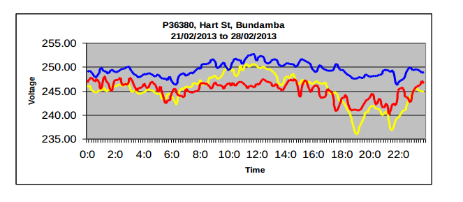

I have started calibrating the EmonTx using just one phase.
As suggested, I put my 3 CTs on the same phase and adjusted voltage, current and Power factor using a "pure" resistive load.
So far so good.
After a few seconds, I got some values reported as "ovf". This is not happening all the time. See below for more info.
emonTx V3 CT1234 Voltage 3 Phase example OpenEnergyMonitor.org Node: 10 Freq: 433Mhz Network: 210 Voltage: 234.28 Current 1: 0.04 Power 1: -0.07 VA 1: 9.37 PF 1: -0.01 Current 2: 0.11 Power 2: -1.01 VA 2: 25.30 PF 2: -0.04 Current 3: 0.06 Power 3: 0.40 VA 3: 13.75 PF 3: 0.03 Voltage: 234.27 Current 1: 0.04 Power 1: 0.78 VA 1: 8.36 PF 1: 0.09 Current 2: 0.09 Power 2: -0.39 VA 2: 21.81 PF 2: -0.02 Current 3: 0.06 Power 3: ovf VA 3: 13.06 PF 3: ovf Voltage: 233.81 Current 1: 0.02 Power 1: 0.37 VA 1: 4.21 PF 1: 0.09 Current 2: 0.10 Power 2: 3.75 VA 2: 24.28 PF 2: 0.15 Current 3: 0.06 Power 3: 0.62 VA 3: 14.26 PF 3: 0.04 Voltage: 224.88 Current 1: 8.25 Power 1: 1841.05 VA 1: 1856.13 PF 1: 0.99 Current 2: 8.23 Power 2: -919.64 VA 2: 1850.35 PF 2: -0.50 Current 3: 8.30 Power 3: ovf VA 3: 1865.43 PF 3: ovf Voltage: 225.32 Current 1: 8.05 Power 1: 1799.15 VA 1: 1813.50 PF 1: 0.99 Current 2: 8.03 Power 2: -907.10 VA 2: 1809.03 PF 2: -0.50 Current 3: 8.08 Power 3: -911.09 VA 3: 1820.89 PF 3: -0.50 Voltage: 224.98 Current 1: 8.02 Power 1: 1790.43 VA 1: 1804.50 PF 1: 0.99 Current 2: 8.00 Power 2: -903.17 VA 2: 1799.96 PF 2: -0.50 Current 3: 8.06 Power 3: -914.48 VA 3: 1813.90 PF 3: -0.50 Voltage: 225.49 Current 1: 8.04 Power 1: 1797.78 VA 1: 1811.91 PF 1: 0.99 Current 2: 8.01 Power 2: -893.13 VA 2: 1807.02 PF 2: -0.49 Current 3: 8.07 Power 3: ovf VA 3: 1819.44 PF 3: ovf Voltage: 225.52 Current 1: 8.04 Power 1: 1799.86 VA 1: 1813.91 PF 1: 0.99 Current 2: 8.01 Power 2: -898.48 VA 2: 1807.46 PF 2: -0.50 Current 3: 8.06 Power 3: -914.16 VA 3: 1817.13 PF 3: -0.50 Voltage: 233.52 Current 1: 0.21 Power 1: 1.52 VA 1: 49.74 PF 1: 0.03 Current 2: 0.17 Power 2: 0.93 VA 2: 39.27 PF 2: 0.02 Current 3: 0.24 Power 3: 0.93 VA 3: 55.83 PF 3: 0.02
I read in this forum it could be a problem with the memory.
Is there anything we can do to fix this?
Thanks for your help.
Walter
Re: emonTxV3_4_3Phase_Voltage sketch reporting incorrect values
I'm working on it - unfortunately there have been more pressing problems and I have not been able to put as much effort in as I would have liked.
The problems seem to have arisen since JeeLib was expanded to include the RFM69CW radio module.
Re: emonTxV3_4_3Phase_Voltage sketch reporting incorrect values
Thanks Robert
If I can be of any help for testing, just let me know.
Re: emonTxV3_4_3Phase_Voltage sketch reporting incorrect values
Which radio module do you have - RFM12B or RFM69CW?
Re: emonTxV3_4_3Phase_Voltage sketch reporting incorrect values
RFM12B
Re: emonTxV3_4_3Phase_Voltage sketch reporting incorrect values
In that case, I might have a solution. I've thrown out JeeLib and used the low-level SPI commands to operate the RFM12B (courtesy of MartinR's PLL sketch), and mine seems to be OK like that (but I need to do more checks, and there's no watchdog as that's part of JeeLib too). Next task is to do the same for the RFM69CW, but you don't need that (hence the question!)
Re: emonTxV3_4_3Phase_Voltage sketch reporting incorrect values
FWIW, I've been looking into this too, no conclusions yet, but total memory usage appears to be pretty low, so it's either not connected with total memory use, or something is causing memory fragmentation (which could only be use of dynamically allocated C++ classes I think). Hopefully I'll get a chance to look into it a bit more later on today.
Re: emonTxV3_4_3Phase_Voltage sketch reporting incorrect values
No hidden allocation from Arduino libs by the look of it, not likely to get any more time to debug today.
Re: emonTxV3_4_3Phase_Voltage sketch reporting incorrect values
Try this. I have not fully tested it, but then I have only changed the code that called JeeLib. There is no watchdog timer, therefore if the sketch hangs for any reason, it is not likely to recover and will need a manual reset or power-down / power-up.
As it comes, it is set for 868 MHz, though it also appears to work at 433 MHz.
You will want to copy your calibration values from your existing sketch.
Re: emonTxV3_4_3Phase_Voltage sketch reporting incorrect values
Thanks for the sketch.
I have done a few more tests with the following parameters. I have basically changed the RF frequency, disabled CT4 and calibrate:
I am getting the following log: as you can see, I still have a problem with phase 3 (ovf?)
Note that I haven't tried to connect EmonTx to the Raspi though RF yet.
I will run a couple of more tests with CT4 enabled even if I don't need it. I will try to get
Phasecal3 below 2.00 because I have reached the upper limit according to the recommendations.
Thanks
Re: emonTxV3_4_3Phase_Voltage sketch reporting incorrect values
These are the new settings for this test. CT4 enabled, PHASE2 and PHASE3 changed, calibration done.
Log file:
Input 4 has been left floating. All in one, it's looking better.
What do you think?
Thanks
Re: emonTxV3_4_3Phase_Voltage sketch reporting incorrect values
I'm afraid I can't reproduce your error with CT4 disabled. I took L3 up to 100 A (>25 kVA indicated due to non-calibration of the voltage) but on the same phase as L1, and there was no hint of corruption.
Re: emonTxV3_4_3Phase_Voltage sketch reporting incorrect values
Hello all,
I have just started using my new emonTx in three phase from the latest sketch in git and also encountered this issue.
From code analysis, I believe that the issue is the following piece of code:
lastVCross & checkVCross are not initialized, and therefore can be garbage. checkVCross is initialized on the first sampling iteration, but lastVCross is not. This causes the following inequality check to be true, and the crossCount to be wrongly incremented in this iteration. End effect is that only half of the storedV buffer is properly populated, leading to garbage calculations on the phase3.
I believe what was intended, and fixes my issue is:
Cheers,
Jose
Re: emonTxV3_4_3Phase_Voltage sketch reporting incorrect values
FWIW, I have a work-in progress version of the code here:
https://github.com/tim-seoss/emonTxFirmware/blob/master/emonTxShield/Shi...
... which does a few tidy-ups (and I think would catch that bug too, but other means, but I haven't looked to check), and also decreased memory usage (which BTW didn't actually look that bad when I debugged it).
I was thinking of trying a few other changes to this code, including possibly making it into a library (since there are currently multiple versions of it copied across the source tree).
Re: emonTxV3_4_3Phase_Voltage sketch reporting incorrect values
jdpmendes:
That section was lifted straight out of emonlib, so if that is indeed the problem, it's been present in emonlib for as long as I can remember.
I don't have the time at present to recheck the logic.
TimSmall:
You need to be aware that there are many problems that are inherent in the approach, and it can never achieve a high degree of accuracy because so much depends on external factors that cannot be controlled - the principal ones being the system frequency and the voltage balance between the phases. I did think about making it into a library, but decided it was not worth the effort. If at some stage G&T decide to develop a real 3-phase emonTx (and I think the demand is probably there), then a whole new world opens up.
Re: emonTxV3_4_3Phase_Voltage sketch reporting incorrect values
Robert Wall:
"it can never achieve a high degree of accuracy because so much depends on external factors that cannot be controlled - the principal ones being the system frequency and the voltage balance between the phases"
Thanks for the comments.
My assumption (which may be incorrect) is that it's likely to be accurate to within a couple of percent when used at a site with relatively low supply impedance, and on a relatively stable grid frequency (such as the UK), and nearly always better than just measuring VA.
My feeling is that's probably good enough for most users and applications (it's certainly good enough for mine).
I also assume that the preferred solution (given current available kit) would be to use 3 (or more) emonTx, with one AC-AC transformer on each phase?
Given that setting this up will normally require an electrician in (to make the necessary sockets available for all phases, it'd be rare to have them available already I'd think), I assume this will be unappealing to the majority of users.
The same thing would of course go for any new hardware which would require the same changes to the electrical installation.
Given that, I think there's still merit in working on the existing 3 phase code.
I've also been wondering whether any jitter results from the calculations (which would be the case if some calculation steps require variable numbers of clock cycles)? A spare digital output could be pulsed in the code to check this I suppose...
Any thoughts welcome!
Re: emonTxV3_4_3Phase_Voltage sketch reporting incorrect values
My assumption (which may be incorrect) is that it's likely to be accurate to within a couple of percent when used at a site with relatively low supply impedance, and on a relatively stable grid frequency (such as the UK), and nearly always better than just measuring VA.
My feeling is that's probably good enough for most users and applications (it's certainly good enough for mine).
I also assume that the preferred solution (given current available kit) would be to use 3 (or more) emonTx, with one AC-AC transformer on each phase?
That would indeed give more accurate results - and the ability to measure more circuits.
Given that setting this up will normally require an electrician in (to make the necessary sockets available for all phases, it'd be rare to have them available already I'd think), I assume this will be unappealing to the majority of users.
The same thing would of course go for any new hardware which would require the same changes to the electrical installation.
Exactly. But then again, it appears that there are people willing to go to those lengths. Or maybe there's no need to. One alternative to the requirement for a 3-phase supply (or 3 single phases) would be one socket for power and the voltage monitor on phase 1, and capacitive pick-ups on the remaining phases. The snag there is, the capacitive "transformers" require a high impedance buffer amplifier, so it's not a single chip job.
Given that, I think there's still merit in working on the existing 3 phase code.
As I said, I had intended to clean it up but it wasn't high on the list of priorities as it worked (until JeeLib expanded!). And it appears to work again with the slimmed-down radio code.
I've also been wondering whether any jitter results from the calculations (which would be the case if some calculation steps require variable numbers of clock cycles)? A spare digital output could be pulsed in the code to check this I suppose...
Most probably there is. But is it serious? How big is the error compared to all the others? As you said above, a percent or two is good enough for most people, and however bad it is, it's a lot better than guessing the voltage and the power factor, which is what nameless commercial units do.
Re: emonTxV3_4_3Phase_Voltage sketch reporting incorrect values
"My assumption (which may be incorrect) is that it's likely to be accurate to within a couple of percent when used at a site with relatively low supply impedance, and on a relatively stable grid frequency (such as the UK), and nearly always better than just measuring VA.
My feeling is that's probably good enough for most users and applications (it's certainly good enough for mine).
I also assume that the preferred solution (given current available kit) would be to use 3 (or more) emonTx, with one AC-AC transformer on each phase?"
That would indeed give more accurate results - and the ability to measure more circuits.
"Given that setting this up will normally require an electrician in (to make the necessary sockets available for all phases, it'd be rare to have them available already I'd think), I assume this will be unappealing to the majority of users.
The same thing would of course go for any new hardware which would require the same changes to the electrical installation."
Exactly. But then again, it appears that there are people willing to go to those lengths. Or maybe there's no need to. One alternative to the requirement for a 3-phase supply (or 3 single phases) would be one socket for power and the voltage monitor on phase 1, and capacitive pick-ups on the remaining phases. The snag there is, the capacitive "transformers" require a high impedance buffer amplifier, so it's not a single chip job.
"Given that, I think there's still merit in working on the existing 3 phase code."
I had intended to clean it up but it wasn't high on the list of priorities as it worked (until JeeLib expanded!). And it appears to work again with the slimmed-down radio code.
"I've also been wondering whether any jitter results from the calculations (which would be the case if some calculation steps require variable numbers of clock cycles)? A spare digital output could be pulsed in the code to check this I suppose..."
Most probably there is. But is it serious? How big is the error compared to all the others? As you said above, a percent or two is good enough for most people, and however bad it is, it's a lot better than guessing the voltage and the power factor, which is what nameless commercial units do.
Re: emonTxV3_4_3Phase_Voltage sketch reporting incorrect values
That section was lifted straight out of emonlib, so if that is indeed the problem, it's been present in emonlib for as long as I can remember.
But in emonlib:
numberOfSamples++; // Count number of times looped.
happens at the beginning of the loop, so comparing it to 1 correctly identifies the first time through.
In the 3-phase sketch, that increment got moved to the end of the loop, so I think Jose's patch is appropriate. Referencing that unitialised stack variable probably explains why the behaviour is so sensitive to other unrelated changes to the image.
Re: emonTxV3_4_3Phase_Voltage sketch reporting incorrect values
I NEVER increment a loop at the beginning, and that's why I'd completely missed that. That's always the problem with picking up someone else's code. I still need to find the time to check the logic all the way through.
Re: emonTxV3_4_3Phase_Voltage sketch reporting incorrect values
We all missed the real bug: On the first cycle, the buffer array was being addressed outside its limits, thus writing rubbish I know not where (but definitely in the wrong place!).
Tim: Don't do any more work for now. I'll let Glyn have the updated version in a few days.
Re: emonTxV3_4_3Phase_Voltage sketch reporting incorrect values
I must confess to only having a cursory look at the code to review Jose's patch, and am happy to hand over to someone far one more familiar with it than I am. But isn't numberOfSamples initialised to zero for the first cycle?
There's a very good chance I'm looking at the wrong sketch. I'm referring to this one:
https://github.com/openenergymonitor/emonTxFirmware/blob/master/emonTxV3/RFM/emonTxV3.4/emonTxV3_4_3Phase_Voltage/emonTxV3_4_3Phase_Voltage.ino
Re: emonTxV3_4_3Phase_Voltage sketch reporting incorrect values
My assumption (which may be incorrect) is that it's likely to be accurate to within a couple of percent when used at a site with relatively low supply impedance, and on a relatively stable grid frequency (such as the UK), and nearly always better than just measuring VA.
Came across this graph today, which throws some more light (or at least one datapoint) on how well that assumption works in these parts (SE Queensland).

Actually the entire report (https://www.aer.gov.au/sites/default/files/Energex%20-%2029.%20Power%20Quality%20Strategic%20Plan%20-%20October%202014.pdf) is an interesting read and highlights how difficult voltage regulation is. Poor ol' PV cops most of the blame, which for the most part is probably fair, but I think the above graph suggests they've got more fundamental problems. It's the evening peak (long after the sun has gone down), when their phase balance comes off the rails.
I don't live in Bundamba, but I suspect I live on the local equivalent of the blue phase. I always see my crazy-high voltages during the evening peak. Maybe they're winding things up so the local equivalent of the Yellow phase doesn't droop too low, and those of us on the Blue get pushed off the top. I recently added Vpeak tracking to my energy monitor, and my all time record so far is 365.9V (that's Vpeak, not to be confused with Vrms).
Re: emonTxV3_4_3Phase_Voltage sketch reporting incorrect values
"But isn't numberOfSamples initialised to zero for the first cycle?" Indeed it was, and that was the problem! I ruefully admit it took me a while to spot it.
Tim: Unfortunately, work has stopped due to other commitments plus having blown up my emonTx V3.4. I was checking the ac adapter power supply, because it was originally designed for the emonTx with a RFM12B radio module, and the higher power demand of the RFM69CW has had a negative effect.
Re: emonTxV3_4_3Phase_Voltage sketch reporting incorrect values
"how well that assumption
worksDOESN'T WORK" — FTFY.And given a supply like that, even measuring VA looks to be little better than guesswork, and to obtain any sort of accuracy there's little choice but to have a voltage monitor on each phase.
Re: emonTxV3_4_3Phase_Voltage sketch reporting incorrect values
It has been a while since my last message in this thread. Thanks to those who contributed. I would like to make some comments regarding the accuracy of the sketch I use (the one attached here above).
I checked my energy consumption during one week and compared the value with the company counter. Amazingly, I am off by just 1%. This is just fantastic. There are many factors that contribute to this accuracy:
I have one question:
I use an adaptor that outputs 12VAC and would like to power the EmonTx as well. Any surprises with such a voltage?
Thanks
Walter
Re: emonTxV3_4_3Phase_Voltage sketch reporting incorrect values
Does your adapter actually output 12 V ac, or is that the stated output? (The reason for the question: When powering the emonTx, the transformer is to all intents under no load, therefore the voltage rise due to regulation must be added to the stated voltage, which is for full load.)
If the output really is 12 V at your normal mains voltage, then you should be OK, even at nominal mains voltage +20%.
Re: emonTxV3_4_3Phase_Voltage sketch reporting incorrect values
The output is around 12 at no load.
One more comment about my setup: I have installed the 100 A max clip-on CTs. However, the current goes barely above 10 A per phase at max. power which is really for a very short time. So, the CTs are used in the very low range and still the accuracy of the system is pretty high.
Walter
Re: emonTxV3_4_3Phase_Voltage sketch reporting incorrect values
below is my Calibration coefficients, the Irms is correct but some time it show the "ovf" for power Factor. How can i Do to get the correct, i test it with single phase, 3 cts in 1 line.
//These need to be set in order to obtain accurate results
double Vcal = 244.6; // Calibration constant for voltage input
double Ical1 = 90.9; // Calibration constant for current transformer 1
double Ical2 = 90.9; // Calibration constant for current transformer 2
double Ical3 = 90.9; // Calibration constant for current transformer 3
double Ical4 = 16.6; // Calibration constant for current transformer 4
double Phasecal1 = 1.00;
double Phasecal2 = 1.5;
double Phasecal3 = 1.40;
double Phasecal4 = 1.10;
Re: emonTxV3_4_3Phase_Voltage sketch reporting incorrect values
Are you using V.4 (16/6/2015) of the emonTx V3.4 sketch?
There was an addressing problem in earlier versions that corrupted memory and is probably responsible for the "ovf" error.
Your calibration coefficients are for your setup - they will vary slightly for the particular combination of current and voltage transformer and the 3.3 V regulator and scaling resistors inside your emonTx. As long as they are not a long way from the values we state on the calibration pages, they will be OK. They're no use to anyone else, as their components may differ slightly due to manufacturing tolerances.
Re: emonTxV3_4_3Phase_Voltage sketch reporting incorrect values
when i measure 3 phase with emon1,emon2,emon3. it's ok. this mean that i measure 3 single phase 230V ,3 ct lines & sensor voltage.
Re: emonTxV3_4_3Phase_Voltage sketch reporting incorrect values
Hello all,
Thanks for the previous input above, helped me in fixing the 3-phase issue (I believe).
So here is my logic (inside 'calcVI3Ph' function):
//-----------------------------------------------------------------------------
// B) Apply digital high pass filters to remove 2.5V DC offset (to centre wave on 0).
//-----------------------------------------------------------------------------
offsetV = offsetV + ((sampleV-offsetV)/1024);
filteredV = sampleV - offsetV;
offsetI1 = offsetI1 + ((sampleI1-offsetI1)/1024);
filteredI1 = sampleI1 - offsetI1;
offsetI2 = offsetI2 + ((sampleI2-offsetI2)/1024);
filteredI2 = sampleI2 - offsetI2;
offsetI3 = offsetI3 + ((sampleI3-offsetI3)/1024);
filteredI3 = sampleI3 - offsetI3;
#ifdef CT4
offsetI4 = offsetI4 + ((sampleI4-offsetI4)/1024);
filteredI4 = sampleI4 - offsetI4;
#endif
storedV[ (numberOfSamples%samplesPerCycle) ] = filteredV; // store this voltage sample in circular buffer
//-----------------------------------------------------------------------------
// C) Find the number of times the voltage has crossed the initial voltage
// - every 2 crosses we will have sampled 1 wavelength
// - so this method allows us to sample an integer number of half wavelengths which increases accuracy
// Build storedV array
//-----------------------------------------------------------------------------
lastVCross = checkVCross;
checkVCross = (sampleV > startV)? true : false;
if (numberOfSamples==0)
lastVCross = checkVCross; // Initial set for condition below
if (lastVCross != checkVCross)
{
crossCount++;
if (crossCount == 0) // Started recording at -2 crossings so that one complete cycle has been stored before accumulating.
{
samplesPerCycle = numberOfSamples; // storedV[] size now
storedV[0] = filteredV;
storedV[samplesPerCycle] = 0;
sumV = 0;
sumI1 = 0;
sumI2 = 0;
sumI3 = 0;
sumI4 = 0;
sumP1 = 0;
sumP2 = 0;
sumP3 = 0;
sumP4 = 0;
numberOfPowerSamples = 0;
}
}
//-----------------------------------------------------------------------------
// D) Root-mean-square method voltage
//-----------------------------------------------------------------------------
sumV += filteredV * filteredV; // sum += square voltage values
//-----------------------------------------------------------------------------
// E) Root-mean-square method current
//-----------------------------------------------------------------------------
sumI1 += filteredI1 * filteredI1; // sum += square current values
sumI2 += filteredI2 * filteredI2;
sumI3 += filteredI3 * filteredI3;
#ifdef CT4
sumI4 += filteredI4 * filteredI4;
#endif
//-----------------------------------------------------------------------------
// F) Phase calibration - for Phase 1: shifts V1 to correct transformer errors
// for phases 2 & 3 delays V1 by 120 degrees & 240 degrees respectively
// and shifts for fine adjustment and to correct transformer errors.
//-----------------------------------------------------------------------------
if (crossCount >= 0)
{
//compute indexes
V3_current = (numberOfSamples%samplesPerCycle) - round((samplesPerCycle/3)) - PHASE3;
V3_prev = (numberOfSamples%samplesPerCycle) - round((samplesPerCycle/3)) -1 - PHASE3;
V2_current = (numberOfSamples%samplesPerCycle) - round(2*(samplesPerCycle/3)) - PHASE2;
V2_prev = (numberOfSamples%samplesPerCycle) - round(2*(samplesPerCycle/3)) -1 - PHASE2;
if (V2_current<0)
{
V2_current += samplesPerCycle;
}
if (V2_prev<0)
{
V2_prev += samplesPerCycle;
}
if (V3_current<0)
{
V3_current += samplesPerCycle;
}
if (V3_prev<0)
{
V3_prev += samplesPerCycle;
}
phaseShiftedV1 = lastFilteredV + Phasecal1 * (filteredV - lastFilteredV);
phaseShiftedV2 = storedV[V2_prev] + Phasecal2 * (storedV[V2_current] - storedV[V2_prev]);
phaseShiftedV3 = storedV[V3_prev] + Phasecal3 * (storedV[V3_current] - storedV[V3_prev]);
}
//-----------------------------------------------------------------------------
// G) Instantaneous power calc
//-----------------------------------------------------------------------------
sumP1 += phaseShiftedV1 * filteredI1; // Sum += Instantaneous Power
sumP2 += phaseShiftedV2 * filteredI2;
sumP3 += phaseShiftedV3 * filteredI3;
#ifdef CT4
sumP4 += phaseShiftedV1 * filteredI4;
#endif
numberOfPowerSamples++; // Count number of times looped for Power averages (reminder: different from counter below)
numberOfSamples++; // Count number of times looped.
//Serial.print("looped numberOfSamples: "); Serial.println(numberOfSamples);
//Serial.print("time elasped: "); Serial.println(millis()-start);
}
Logic is as follows:
- storedV[] is set to size 30, just to be on safe side as usually 24-26 samples per cycle
- under section B storedV[] index="numberOfSamples%samplesPerCycle" is always used for storing new values
- then under section C once "crossCount=0" is reached, last stored value is moved to index=0 and removed from current index. This as applying the new value to of "samplesPerCycle" to "numberOfSamples%samplesPerCycle", will cause the subsequent value to be stored at index=1, as well as the fact that index="numberOfSamples%samplesPerCycle" will not be used subsequently.
- under section F, "V3_current", "V3_prev", "V2_current" & "V2_prev" for phase shifted V2 and V3 are computed. Logic is simply to go back 1/3 or 2/3 of a cycle in the storedV[] array. Fine tuning an extra 1 or 2 array indexes with "PHASE2" & "PHASE3" is possible. Finally in the case negative array indexes are obtained, "samplesPerCycle" is added (simple logic).
So that seems to be it, rethinking the voltage array procedure.
Please let me know if it works for you, as my code surely requires more testing and feedback.
Thanks
Christophe
Re: emonTxV3_4_3Phase_Voltage sketch reporting incorrect values
I have the same problem and tried to solve it with your code, only an error occurs.
stray \'342\ in program, due to copying from the website. It is I think a character problem, but I can't find which.
Re: emonTxV3_4_3Phase_Voltage sketch reporting incorrect values
"copying from the website" How?
You should download the RAW file from GitHub and save that from your browser window, not the first file you first see that has line numbers.
[You really should have started a new thread - your problem is compiling the sketch, not that it gives you wrong values. I've deleted your duplicate post.]